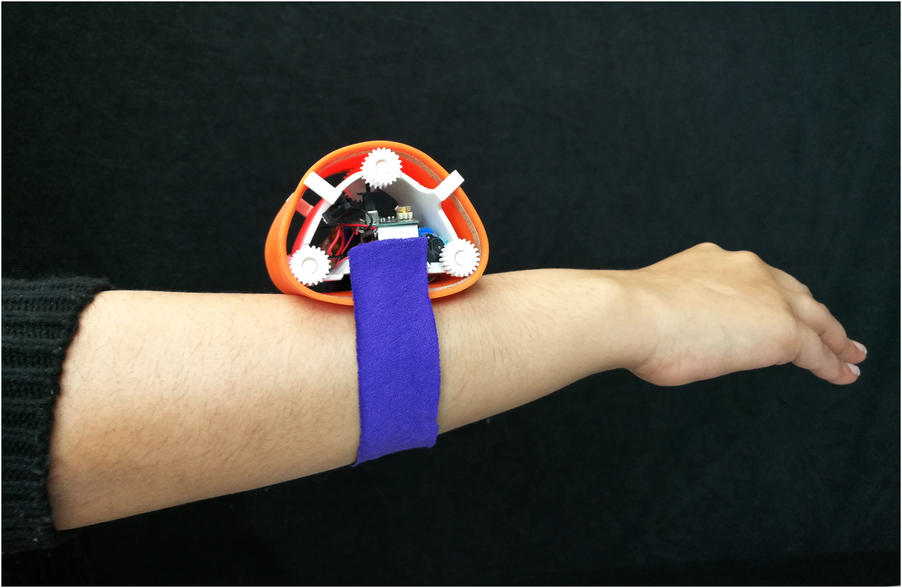
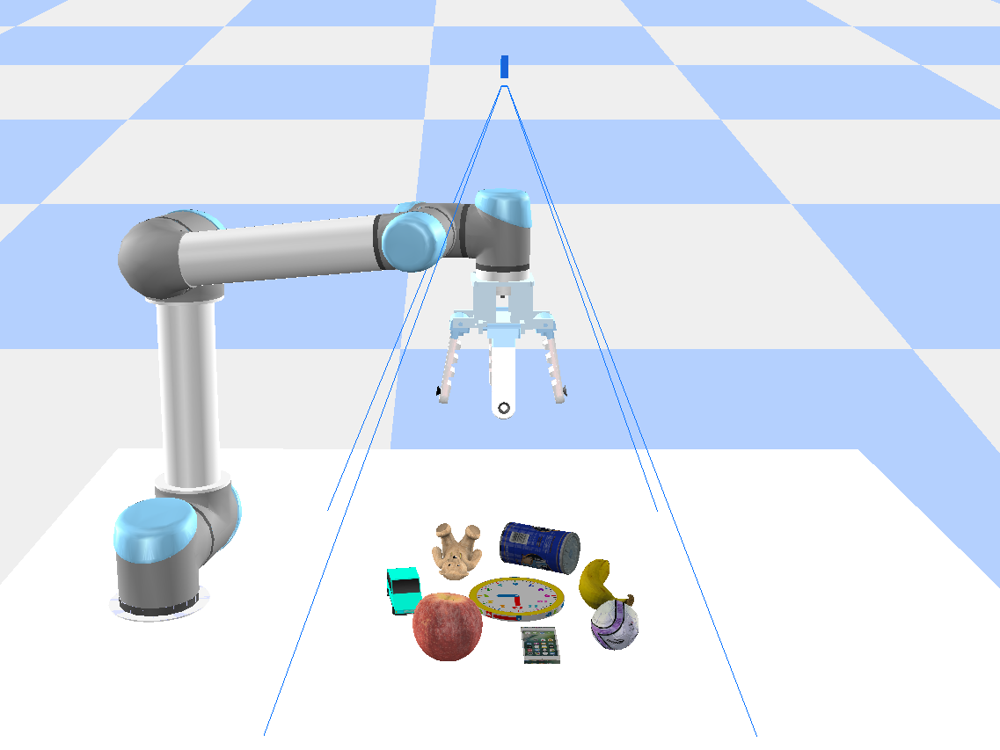
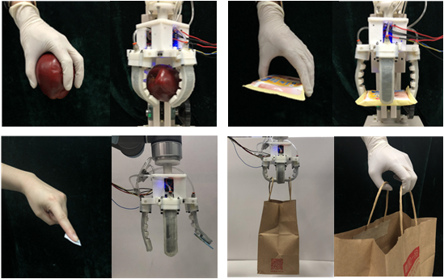

|
Fukang Liu
Fukangl@andrew.cmu.edu
I am a graduate student at Carnegie Mellon University.
I am co-advised by Prof. Zackory Erikson and Prof. Zeynep Temel.
My interests lie in robotics, learning, human-robot interaction, and robotic manipulation.
My goal is to enable robots to work better together with people by integrating design, perception, learning, and control in the real world.
My current research focuses on developing intelligent, autonomous, dynamic and wearable robots that provide assistance for people to perform activities of daily living.
I am also interested in developing methods for robotic manipulation, especially for robotic grasping that allow robots to achieve robust and efficient manipulation tasks in challenging scenarios.
|
|
Publications
|

|
Characterization of a Meso-Scale Wearable Robot for Bathing Assistance
Fukang Liu, Vaidehi Patil, Zackory Erickson, Zeynep Temel
arXiv Preprint, 2022
PDF
|
|

|
Hybrid Robotic Grasping with a Soft Multimodal Gripper and a Deep Multistage Learning Scheme
Fukang Liu, Bin Fang, Fuchun Sun, Xiang Li, Songyu Sun, Huaping Liu
arXiv Preprint, 2022
PDF
|
|

|
Multimode Grasping Soft Gripper Achieved by Layer Jamming Structure and Tendon-Driven Mechanism
Bin Fang, Fuchun Sun, Linyuan Wu, Fukang Liu, Xiangxiang Wang, Haiming Huang, Wenbing Huang, Huaping Liu, Li Wen
Soft Robotics, 2022
PDF
|
|
{kind=link}